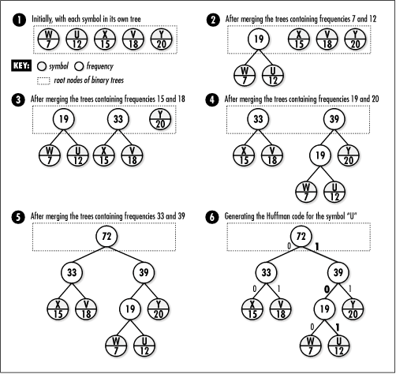

14.4 Description of Huffman
Coding
One
of the oldest and most elegant forms of data compression is
Huffman coding, an algorithm based on minimum redundancy
coding. Minimum redundancy coding suggests that if we know how often
different symbols occur in a set of data, we can represent the
symbols in a way that makes the data require less space. The
idea is to encode symbols that occur more frequently with
fewer bits than those that occur less frequently. It is
important to realize that a symbol is not necessarily a
character of text: a symbol can be any amount of data we
choose, but it is often one byte's worth.
14.4.1 Entropy and Minimum
Redundancy
To begin, let's revisit the concept of
entropy introduced at the beginning of the chapter. Recall
that every set of data has some informational content, which
is called its entropy. The entropy of a set of data is the sum
of the entropies of each of its symbols. The entropy S of a symbol z is defined as:
Sz
= -lgPz
where Pz is the probability of z being found in the data. If it is
known exactly how many times z
occurs, Pz is referred to as
the frequency of z. As an example, if z occurs 8 times in 32 symbols, or
one-fourth of the time, the entropy of z is:
-lg(1/4) = 2 bits
This means that using any more than two bits
to represent z is more than we
need. If we consider that normally we represent a symbol using
eight bits (one byte), we see that compression here has the
potential to improve the representation a great deal.
Table
14.1 presents an example of calculating the entropy of
some data containing 72 instances of five different symbols.
To do this, we sum the entropies contributed by each symbol.
Using "U" as an example, the total entropy for a symbol is
computed as follows. Since "U" occurs 12 times out of the 72
total, each instance of "U" has an entropy that is calculated
as:
-lg(12/72) = 2.584963 bits
Consequently, because "U" occurs 12 times in
the data, its contribution to the entropy of the data is
calculated as:
(2.584963)(12) = 31.01955 bits
In order to calculate the overall entropy of
the data, we sum the total entropies contributed by each
symbol. To do this for the data in Table
14.1, we have:
31.01955+36.000000+23.53799+33.94552+36.95994
= 161.46300 bits
If using 8 bits to represent each symbol
yields a data size of (72)(8) = 576 bits, we should be able to
compress this data, in theory, by up to:
1-(161.463000/576) = 72.0%
Table 14.1. The Entropy of a Set of
Data Containing 72 Instances of 5 Different Symbols
|
U |
12/72 |
2.584963 |
31.01955 |
|
V |
18/72 |
2.000000 |
36.00000 |
|
W |
7/72 |
3.362570 |
23.53799 |
|
X |
15/72 |
2.263034 |
33.94552 |
|
Y |
20/72 |
1.847997 |
36.95994 |
14.4.2 Building a Huffman Tree
Huffman coding presents a way to approximate
the optimal representation of data based on its entropy. It
works by building a data structure called a Huffman tree, which is a binary tree
(see Chapter
9) organized to generate Huffman
codes. Huffman codes are the
codes assigned to symbols in the data to achieve compression.
However, Huffman codes result in compression that only
approximates the data's entropy because, as you may have
noticed in Table
14.1, the entropies of symbols often come out to be
fractions of bits. Since the actual number of bits used in
Huffman codes cannot be fractions in practice, some codes end
up with slightly too many bits to be optimal.
Figure
14.1 illustrates the process of building a Huffman tree
from the data in Table
14.1. Building a Huffman tree proceeds from its leaf nodes
upward. To begin, we place each symbol and its frequency in
its own tree (see Figure
14.1, step 1). Next, we merge the two trees whose root
nodes have the smallest frequencies and store the sum of the
frequencies in the new tree's root (see Figure
14.1, step 2). This process is then repeated until we end
up with a single tree (see Figure
14.1, step 5), which is the final Huffman tree. The root
node of this tree contains the total number of symbols in the
data, and its leaf nodes contain the original symbols and
their frequencies. Because Huffman coding continually seeks
out the two trees that appear to be the best to merge at any
given time, it is a good example of a greedy algorithm (see Chapter
1).

14.4.3 Compressing and
Uncompressing Data
Building a
Huffman tree is part of both compressing and uncompressing
data. To compress data using a Huffman tree, given a specific
symbol, we start at the root of the tree and trace a path to
the symbol's leaf. As we descend along the path, whenever we
move to the left, we append to the current code; whenever we
move to the right, we append 1. Thus, in Figure
14.1, step 6, to determine the Huffman code for "U" we
move to the right (1), then to the left (10), and then to the
right again (101). The Huffman codes for all of the symbols in
the figure are:
U = 101, V = 01, W = 100, X = 00, Y = 11
To uncompress data using a Huffman tree, we
read the compressed data bit by bit. Starting at the tree's
root, whenever we encounter in the data, we move to the left
in the tree; whenever we encounter 1, we move to the right.
Once we reach a leaf node, we generate the symbol it contains,
move back to the root of the tree, and repeat the process
until we exhaust the compressed data. Uncompressing data in
this manner is possible because Huffman codes are prefix free, which means that no code
is a prefix of any other. This ensures that once we encounter
a sequence of bits that matches a code, there is no ambiguity
as to the symbol it represents. For example, notice that 01,
the code for "V," is not a prefix of any of the other codes.
Thus, as soon as we encounter 01 in the compressed data, we
know that the code must represent "V."
14.4.4 Effectiveness of Huffman
Coding
To determine the
reduced size of data compressed using Huffman coding, we
calculate the product of each symbol's frequency times the
number of bits in its Huffman code, then add them together.
Thus, to calculate the compressed size of the data presented
in Table
14.1 and Figure
14.1, we have:
(12)(3)+(18)(2)+(7)(3)+(15)(2)+(20)(2) = 163
bits
Assuming that without compression each of the
72 symbols would be represented with 8 bits, for a total data
size of 576 bits, we end up with the following compression
ratio:
1-(163/576)=71.7%
Once again, considering the fact that we
cannot take into account fractional bits in Huffman coding, in
many cases this value will not be quite as good as the data's
entropy suggests, although in this case it is very close.
In general, Huffman coding is not the most
effective form of compression, but it runs fast both when
compressing and uncompressing data. Generally, the most
time-consuming aspect of compressing data with Huffman coding
is the need to scan the data twice: once to gather
frequencies, and a second time actually to compress the data.
Uncompressing the data is particularly efficient because
decoding the sequence of bits for each symbol requires only a
brief scan of the Huffman tree, which is bounded. |